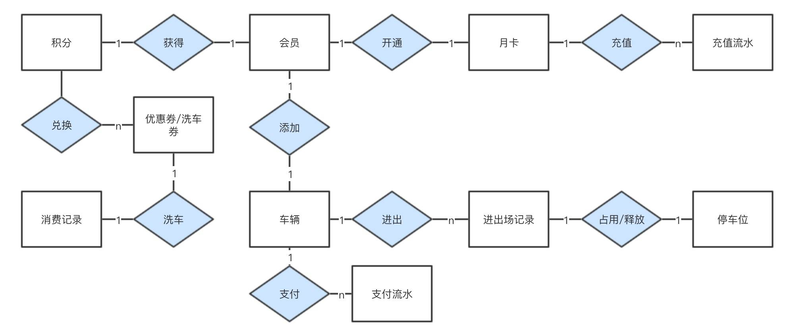
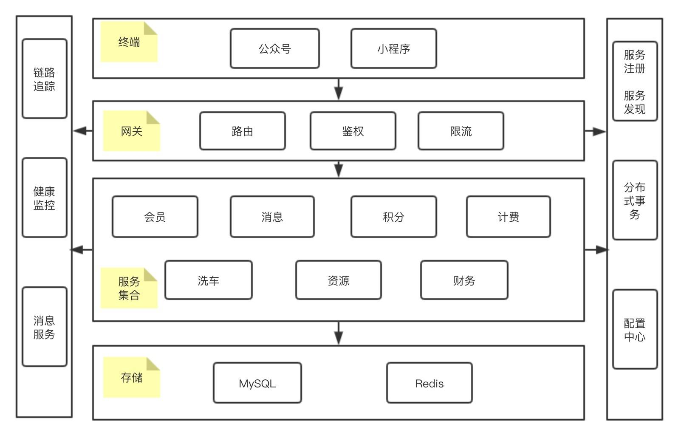
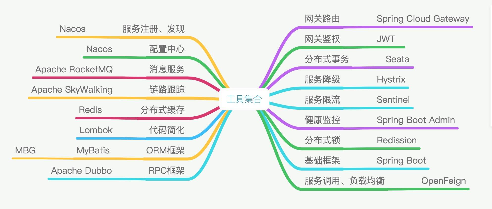

- 00 开篇导读.md
- 01 以真实“商场停车”业务切入——需求分析.md
- 02 具象业务需求再抽象分解——系统设计.md
- 03 第一个 Spring Boot 子服务——会员服务.md
- 04 如何维护接口文档供外部调用——在线接口文档管理.md
- 05 认识 Spring Cloud 与 Spring Cloud Alibaba 项目.md
- 06 服务多不易管理如何破——服务注册与发现.md
- 07 如何调用本业务模块外的服务——服务调用.md
- 08 服务响应慢或服务不可用怎么办——快速失败与服务降级.md
- 09 热更新一样更新服务的参数配置——分布式配置中心.md
- 10 如何高效读取计费规则等热数据——分布式缓存.md
- 11 多实例下的定时任务如何避免重复执行——分布式定时任务.md
- 12 同一套服务如何应对不同终端的需求——服务适配.md
- 13 采用消息驱动方式处理扣费通知——集成消息中间件.md
- 14 Spring Cloud 与 Dubbo 冲突吗——强强联合.md
- 15 破解服务中共性问题的繁琐处理方式——接入 API 网关.md
- 16 服务压力大系统响应慢如何破——网关流量控制.md
- 17 集成网关后怎么做安全验证——统一鉴权.md
- 18 多模块下的接口 API 如何统一管理——聚合 API.md
- 19 数据分库后如何确保数据完整性——分布式事务.md
- 20 优惠券如何避免超兑——引入分布式锁.md
- 21 如何查看各服务的健康状况——系统应用监控.md
- 22 如何确定一次完整的请求过程——服务链路跟踪.md
- 23 结束语.md
02 具象业务需求再抽象分解——系统设计
经过前篇需求梳理，商场停车收费业务需求情况已经十分明了，本节就依据前文的输出做为输入，开始系统设计工作，包括功能模块设计、存储设计、架构设计等，为后面的编码提供良好的基础保障。
有同学可能会有疑问，都使用敏捷了，怎么还要设计，直接上手编码不就行了？敏捷提倡响应变化，减少文档，很多朋友有误解，以为敏捷就是不需要设计，不需要文档，就是要快，凡是阻碍实施交付的都要省掉。其实，敏捷并不是消灭文档，消灭设计，关键性的文档、图片、设计还是要留存的，比如存储设计、关键业务流程设计等，但并不局限于是文档形式，可以是白板上或 A4 纸上的草图，也可以是便利贴，也可以是正式的文档等，能表达意思即可，方便后期追溯。
数据实体联系
基于以上业务情况，按领域划分为七个小模块，每个模块中划分出相应实体、事件，通过软件简略画出关键数据实体-联系图（未包含所有实体），如下图所示：
- 会员，车辆，月卡(绑定手机号，录入车辆，开月卡)
- 车位，闸机(车辆停靠、车辆离开)
- 积分(签到、兑换)
- 计费规则(入场、出场)
- 交易流水(支付、充值)
- 消息(推送)
- 洗车

业务模块设计
据第一篇需求分析的情况，我们已经识别出关键流程、主要业务模块以及模块中主要的业务实体、实体相关的事件。本案例完全可以采用单实体的模式开发，但为了模拟微服务开发的场景，所以这里按照微服务的设计方式来进行。
根据关键业务实体联系与事件，将业务模块整合为七个子服务。
- 会员服务，包括会员信息、车辆信息、会员月卡
- 基础资源服务，包括车位、闸机，车辆停靠记录
- 计费服务，车辆出入场记录，计费规则
- 积分服务，积分兑换，会员积分，会员签到得积分
- 财务服务，支付流水，充值流水，财务统计
- 消息服务，记录通知内容
- 洗车服务，积分兑换的洗车券去场内洗车
服务的拆分粒度究竟多细，业界并没有统一的标准，必须依据公司团队情况、人员能力水平以及产品的使用情况来划分，不可过细，过粗也失去了微服务的意义。 每个微服务可交由二到三个开发人员维护，避免维护过多，分散精力，同时又可保证快速的响应维护升级。
存储设计
微服务架构风格的一个好处，是持久性的封装。我们可以根据每个服务的需要，去选择不同的持久化技术。根据每种数据类型的特点而去选择数据存储的方法，也就是混合持久化，结构化存储与非结构化存储混合使用。不同服务间使用不同的存储模型，单一服务中也可以使用混合存储。既然要采用微服务化结构，从独立开发、运行、部署和运维都是单独的小应用。每个小应用内部业务逻辑处理，到数据库访问，以及数据库都是独立的。
依据本案例的业务场景，我们拆分为七个子存储库，分别为：
- park_member——会员服务库
- park_resource——停车场资源服务库
- park_charging——计费服务库
- park_card——积分服务库
- park_finance——财务服务库
- park_message——消息服务库
- park-carwash——洗车服务库
实际中有些实施微服务的团队，将服务拆分，但存储库依旧仍是一份，现实中应该有为数不少的存在。不能说不对，只能说不符合微服务的建议。
结构化存储采用社区版 MySQL 5.7+版本，非结构存储主要涉及到缓存这块，采用 Redis 4.0 +版本。结构化存储中建议设计一些通用字段，主要用于跟踪数据记录，库表结构通用字段如下：
`create_by` varchar(32) DEFAULT NULL COMMENT '创建人',
`create_date` timestamp NOT NULL DEFAULT CURRENT_TIMESTAMP COMMENT '创建日期',
`update_by` varchar(32) DEFAULT NULL COMMENT '更新人',
`update_date` timestamp NOT NULL DEFAULT CURRENT_TIMESTAMP COMMENT '更新日期',
`remark` varchar(500) DEFAULT NULL COMMENT '备注',
`version` int(4) DEFAULT '0' COMMENT '版本',
`state` int(4) DEFAULT '1' COMMENT '状态'
每条数据记录的创建人、创建时间，后续的更改人、更改时间，非业务层面的备注、版本、状态，有利于数据维护人员识别，建议每个表中都加上。
建库脚本如下
CREATE DATABASE `park_member` CHARACTER SET utf8 COLLATE utf8_general_ci;
CREATE DATABASE `park_resource` CHARACTER SET utf8 COLLATE utf8_general_ci;
CREATE DATABASE `park_charging` CHARACTER SET utf8 COLLATE utf8_general_ci;
CREATE DATABASE `park_card` CHARACTER SET utf8 COLLATE utf8_general_ci;
CREATE DATABASE `park_finance` CHARACTER SET utf8 COLLATE utf8_general_ci;
CREATE DATABASE `park_message` CHARACTER SET utf8 COLLATE utf8_general_ci;
CREATE DATABASE `park_carwash` CHARACTER SET utf8 COLLATE utf8_general_ci;
park_member 库初始化表结构
-- ----------------------------
-- Table structure for member
-- ----------------------------
DROP TABLE IF EXISTS `member`;
CREATE TABLE `member` (
`id` varchar(32) NOT NULL DEFAULT '',
`phone` varchar(11) DEFAULT NULL COMMENT '手机号',
`birth` varchar(10) DEFAULT NULL COMMENT '生日',
`full_name` varchar(20) DEFAULT NULL COMMENT '姓名',
PRIMARY KEY (`id`) USING BTREE
) ENGINE=InnoDB DEFAULT CHARSET=utf8 COMMENT='会员信息';
-- ----------------------------
-- Table structure for month_card
-- ----------------------------
DROP TABLE IF EXISTS `month_card`;
CREATE TABLE `month_card` (
`id` varchar(32) NOT NULL DEFAULT '',
`card_no` varchar(20) DEFAULT NULL COMMENT '会员卡号',
`start` varchar(16) DEFAULT NULL COMMENT '有效期起始',
`ends` varchar(16) DEFAULT NULL COMMENT '有效期截止',
`member_id` varchar(32) DEFAULT NULL COMMENT '会员编号',
PRIMARY KEY (`id`) USING BTREE
) ENGINE=InnoDB DEFAULT CHARSET=utf8 COMMENT='会员月卡信息';
-- ----------------------------
-- Table structure for vehicle
-- ----------------------------
DROP TABLE IF EXISTS `vehicle`;
CREATE TABLE `vehicle` (
`id` varchar(32) NOT NULL DEFAULT '',
`member_id` varchar(32) DEFAULT NULL COMMENT '会员编号',
`plate_no` varchar(10) DEFAULT NULL COMMENT '车牌号',
`vehicle_inf` varchar(50) DEFAULT NULL COMMENT '车辆型号',
PRIMARY KEY (`id`) USING BTREE
) ENGINE=InnoDB DEFAULT CHARSET=utf8 COMMENT='会员车辆';
park_resource 库初始化表结构
-- ----------------------------
-- Table structure for brake
-- ----------------------------
DROP TABLE IF EXISTS `brake`;
CREATE TABLE `brake` (
`id` varchar(32) NOT NULL DEFAULT '',
`code` varchar(20) DEFAULT NULL COMMENT '编号',
`desc` varchar(50) DEFAULT NULL COMMENT '描述',
PRIMARY KEY (`id`) USING BTREE
) ENGINE=InnoDB DEFAULT CHARSET=utf8 COMMENT='停车场闸机';
-- ----------------------------
-- Table structure for stall
-- ----------------------------
DROP TABLE IF EXISTS `stall`;
CREATE TABLE `stall` (
`id` varchar(32) NOT NULL DEFAULT '',
`code` varchar(10) DEFAULT NULL COMMENT '编号',
`is_parked` int(2) DEFAULT NULL COMMENT '是否被占用',
PRIMARY KEY (`id`) USING BTREE
) ENGINE=InnoDB DEFAULT CHARSET=utf8 COMMENT='车位表';
-- ----------------------------
-- Table structure for stall_parked
-- ----------------------------
DROP TABLE IF EXISTS `stall_parked`;
CREATE TABLE `stall_parked` (
`id` varchar(32) NOT NULL DEFAULT '',
`stall_id` varchar(32) DEFAULT NULL COMMENT '车位编号',
`plate_no` varchar(30) DEFAULT NULL COMMENT '车牌',
`mtype` int(2) DEFAULT NULL COMMENT '0 入场，1 出场',
PRIMARY KEY (`id`) USING BTREE
) ENGINE=InnoDB DEFAULT CHARSET=utf8 COMMENT='车位停靠记录';
park_charging 库初始化表结构
-- ----------------------------
-- Table structure for charging_rule
-- ----------------------------
DROP TABLE IF EXISTS `charging_rule`;
CREATE TABLE `charging_rule` (
`id` varchar(32) NOT NULL DEFAULT '',
`start` int(4) DEFAULT NULL COMMENT '停车时间起始',
`end` int(4) DEFAULT NULL COMMENT '停车时间结束',
`fee` float DEFAULT NULL COMMENT '收费',
PRIMARY KEY (`id`) USING BTREE
) ENGINE=InnoDB DEFAULT CHARSET=utf8 COMMENT='计费规则';
-- ----------------------------
-- Table structure for entrance
-- ----------------------------
DROP TABLE IF EXISTS `entrance`;
CREATE TABLE `entrance` (
`id` varchar(32) NOT NULL DEFAULT '',
`member_id` varchar(32) DEFAULT NULL COMMENT '会员编号',
`plate_no` varchar(10) DEFAULT NULL COMMENT '车牌',
`brake_id` varchar(32) DEFAULT NULL COMMENT '闸机号',
PRIMARY KEY (`id`) USING BTREE,
KEY `no_idx` (`plate_no`),
KEY `member_idx` (`member_id`)
) ENGINE=InnoDB DEFAULT CHARSET=utf8 COMMENT='车辆入场';
-- ----------------------------
-- Table structure for vexists
-- ----------------------------
DROP TABLE IF EXISTS `vexists`;
CREATE TABLE `vexists` (
`id` varchar(32) NOT NULL DEFAULT '',
`member_id` varchar(32) DEFAULT NULL COMMENT '会员编号',
`brake_id` varchar(32) DEFAULT NULL COMMENT '闸机号',
`plate_no` varchar(32) DEFAULT NULL COMMENT '车牌号',
PRIMARY KEY (`id`) USING BTREE,
KEY `no_idx` (`plate_no`),
KEY `member_idx` (`member_id`)
) ENGINE=InnoDB DEFAULT CHARSET=utf8 COMMENT='车辆驶出';
park_card 库初始化表结构
-- ----------------------------
-- Table structure for exchange
-- ----------------------------
DROP TABLE IF EXISTS `exchange`;
CREATE TABLE `exchange` (
`id` varchar(32) NOT NULL DEFAULT '',
`member_id` varchar(32) DEFAULT NULL COMMENT '会员编号',
`card_qty` int(11) DEFAULT NULL COMMENT '积分数量',
`ctype` int(4) DEFAULT NULL COMMENT '0 优惠券，1 洗车券',
`code` varchar(30) DEFAULT NULL COMMENT '券编码',
PRIMARY KEY (`id`) USING BTREE
) ENGINE=InnoDB DEFAULT CHARSET=utf8 COMMENT='积分兑换';
-- ----------------------------
-- Table structure for member_card
-- ----------------------------
DROP TABLE IF EXISTS `member_card`;
CREATE TABLE `member_card` (
`id` varchar(32) NOT NULL DEFAULT '',
`member_id` varchar(32) DEFAULT NULL COMMENT '会员编号',
`cur_qty` varchar(20) DEFAULT NULL COMMENT '当前可用积分',
PRIMARY KEY (`id`) USING BTREE
) ENGINE=InnoDB DEFAULT CHARSET=utf8 COMMENT='会员积分';
-- ----------------------------
-- Table structure for member_sign
-- ----------------------------
DROP TABLE IF EXISTS `member_sign`;
CREATE TABLE `member_sign` (
`id` varchar(32) NOT NULL DEFAULT '',
`member_id` varchar(32) DEFAULT NULL COMMENT '会员编号',
`cnt` int(4) DEFAULT NULL COMMENT '积分数量',
`ctype` int(4) DEFAULT NULL COMMENT '0 签到，1 商场消费',
PRIMARY KEY (`id`) USING BTREE
) ENGINE=InnoDB DEFAULT CHARSET=utf8 COMMENT='会员签到';
park_finance 库初始化表结构
-- ----------------------------
-- Table structure for billing
-- ----------------------------
DROP TABLE IF EXISTS `billing`;
CREATE TABLE `billing` (
`id` varchar(32) NOT NULL DEFAULT '',
`member_id` varchar(32) DEFAULT NULL COMMENT '会员编号',
`fee` float DEFAULT '0' COMMENT '支付金额',
`plate_no` varchar(10) DEFAULT NULL COMMENT '车牌号',
`duration` float DEFAULT '0' COMMENT '停车时间',
PRIMARY KEY (`id`) USING BTREE,
KEY `no_idx` (`plate_no`)
) ENGINE=InnoDB DEFAULT CHARSET=utf8 COMMENT='车辆驶出支付流水';
-- ----------------------------
-- Table structure for month_card_recharge
-- ----------------------------
DROP TABLE IF EXISTS `month_card_recharge`;
CREATE TABLE `month_card_recharge` (
`id` varchar(32) NOT NULL DEFAULT '',
`card_no` varchar(20) DEFAULT NULL COMMENT '月卡号',
`member_id` varchar(32) DEFAULT NULL COMMENT '会员编号',
`amount` float DEFAULT NULL COMMENT '充值金额',
PRIMARY KEY (`id`) USING BTREE
) ENGINE=InnoDB DEFAULT CHARSET=utf8 COMMENT='会员月卡充值';
park_message 库初始化表结构
-- ----------------------------
-- Table structure for message
-- ----------------------------
DROP TABLE IF EXISTS `message`;
CREATE TABLE `message` (
`id` varchar(32) NOT NULL DEFAULT '',
`mtype` char(10) DEFAULT NULL COMMENT '消息类型，PAY 支付消息，BIND 绑定信息',
`mcontent` varchar(500) DEFAULT NULL COMMENT '消息内容',
`member_id` varchar(32) DEFAULT NULL COMMENT '会员',
PRIMARY KEY (`id`) USING BTREE
) ENGINE=InnoDB DEFAULT CHARSET=utf8 COMMENT='推送消息';
park_carwash 库表结构
-- ----------------------------
-- Table structure for car_wash
-- ----------------------------
DROP TABLE IF EXISTS `car_wash`;
CREATE TABLE `car_wash` (
`id` varchar(32) NOT NULL,
`member_id` varchar(32) DEFAULT NULL COMMENT '会员编号',
`plate_no` varchar(10) DEFAULT NULL COMMENT '车牌号',
`ticket_code` varchar(20) DEFAULT NULL COMMENT '洗车券编码',
PRIMARY KEY (`id`) USING BTREE
) ENGINE=InnoDB DEFAULT CHARSET=utf8;
完整的表结构脚本地址，点击下方链接：
https://github.com/backkoms/spring-cloud-alibaba-ParkingLot/tree/master/src/script
初始化数据
有了初步数据库的模型，需要初始化一部分数据进去，比如计费规则、闸机信息，车位信息。
闸机数据
INSERT INTO `brake` VALUES ('4edb0820241041e5a0f08d01992de4c0', 'ct1', '入场口', 'admin', '2019-12-27 11:37:22', NULL, '2019-12-27 11:37:22', NULL, 0, 1);
INSERT INTO `brake` VALUES ('989170c529a348b3b93bf2a4653e8ea9', 'ct2', '入场口', 'admin', '2019-12-27 11:37:45', NULL, '2019-12-27 11:37:45', NULL, 0, 1);
INSERT INTO `brake` VALUES ('e489029055654bccb3cd601f0be71c41', 'ct3', '出场口', 'admin', '2019-12-27 11:37:36', NULL, '2019-12-27 11:37:36', NULL, 0, 1);
INSERT INTO `brake` VALUES ('f726873ed17441ea8dfbf78381bcde78', 'ct4', '出场口', 'admin', '2019-12-27 11:37:41', NULL, '2019-12-27 11:37:41', NULL, 0, 1);
车位数据
INSERT INTO `stall` VALUES ('004ac347b94e42bb8f0f6febd3265e35', 'P336', 0, 'admin', '2019-12-27 11:42:03', NULL, '2019-12-27 11:42:03', NULL, 0, 1);
INSERT INTO `stall` VALUES ('008773e089664ce49607c86b89dd8c0f', 'P250', 0, 'admin', '2019-12-27 11:42:03', NULL, '2019-12-27 11:42:03', NULL, 0, 1);
INSERT INTO `stall` VALUES ('0110ef02554f46ce91a3eeec6ecf2f95', 'P224', 0, 'admin', '2019-12-27 11:42:03', NULL, '2019-12-27 11:42:03', NULL, 0, 1);
INSERT INTO `stall` VALUES ('014f1f2b972e4e0092d749a7437f824d', 'P577', 0, 'admin', '2019-12-27 11:42:04', NULL, '2019-12-27 11:42:04', NULL, 0, 1);
INSERT INTO `stall` VALUES ('019f4aa0c22849e1a5758aaa33b855df', 'P229', 0, 'admin', '2019-12-27 11:42:03', NULL, '2019-12-27 11:42:03', NULL, 0, 1);
计费规则
INSERT INTO `charging_rule` VALUES ('41ed927623cf4a0bb5354b10100da992', 0, 30, 0, 'admin', '2019-12-27 11:26:08', NULL, '2019-12-27 11:26:08', '30 分钟内免费', 0, 1);
INSERT INTO `charging_rule` VALUES ('41ed927623cf4a0bb5354b10100da993', 31, 120, 5, 'admin', '2019-12-27 11:26:12', NULL, '2019-12-27 11:26:12', '2 小时内，5 元', 0, 1);
INSERT INTO `charging_rule` VALUES ('4edb0820241041e5a0f08d01992de4c0', 121, 720, 10, 'admin', '2019-12-27 11:34:06', NULL, '2019-12-27 11:34:06', '2 小时以上 12 小时以内，10 元', 0, 1);
INSERT INTO `charging_rule` VALUES ('7616fb412e824dcda41ed9367feadfda', 721, 1440, 20, 'admin', '2019-12-27 13:35:37', NULL, '2019-12-27 13:35:37', '12 时至 24 时，20 元', 0, 1);
非结构化存储
主要使用 Redis 中间件来存储可用车位的实时性信息，计费规则信息等热数据。
架构设计
没有最优的架构，只有最合适的架构，一切系统设计原则都要以解决业务问题为最终目标，并随着业务的发展，不断进行迭代演进。经过上面业务模块、存储模型的划分，基本的代码架构已经清晰可见。综合业务模块、微服务架构特性，输出功能架构设计图。

基于总体功能架构图，使用特定的功能组件即可实现相应的功能。前期也提到，Spring Cloud 全家桶中囊括了很多组件，开箱即用，这对快速上手微服务开发提供了极大的便利。同时，再融入时常开发实践一些常用的高效工具来提升编码效率如 Lombok，MBG 等。

留个思考题
组件库有提成 Lombok，对简化代码开发很有帮助。你有什么好用的组件库，能够在项目开发中，高效发挥作用呢？